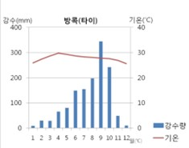

기상정보
열대기후
기상정보
열대기후 맞춤형
도시 인프라(1)
열대기후 맞춤형
도시 인프라(2)

<기상 정보>
기온: 20도 이상(연중 기온↑), 연교차 5~6도, 후덥지근한 날씨
습도: 일년 내내 비가 자주 내리기 때문에
습도가 77%~88%까지 측정된다
연 강수량: 열대저기압대에 위치하기 때문에
저기압이 형성되기 쉬워 구름이 많이 관측되어
1년에 약 1200~2500mm 정도 내린다
구름: 지표면의 공기가 쉽게 가열되고
저기압이기 때문에 상승기류가 생기기 가장 쉬우며
주로 두꺼운 적운과 적란운 구름이 관측된다